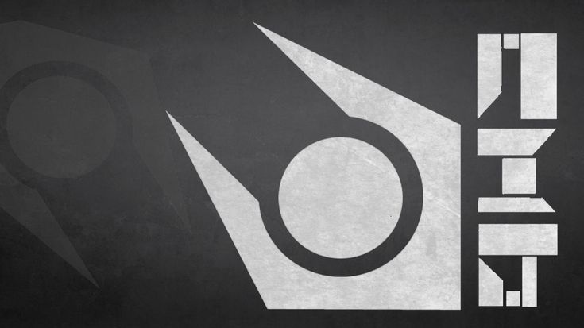
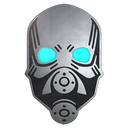
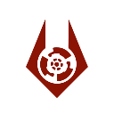
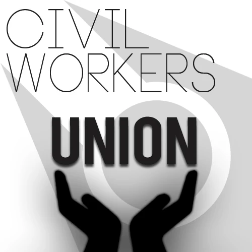

Cellar Project |
Reglas del Semi-Serious Half Life 2 Roleplay.
Hecho por [CP] Flexgg13ULTIMA ACTUALIZACÍON: 30 DE JULIO DEL 2025
 NO ESTA PERMITIDO EL....
NO ESTA PERMITIDO EL....
 - RDM, Random Deathmach (Matar a alguien aleatoriamente sin justificación).
- MG, Metagaming (Buscar información fuera de rol).
- Ghosting (Una vez muerto no podras recordar que paso en tu anterior vida).
- FailRP (Hacer cosas que no debes o romper reglas del rol correspondiente).
- Mic-Spam.
- Racismo, etnocentrismo, comentarios u actos personales a las personas.
- Prop-Kill. (Matar / Dañar a alguien con entidades/props).
- Prop-Surf.
- Prop-Push. (Poner props/entidades en vehiculos).
- Prop-Climb. (Subir a lugares inaccesibles o que solo se puedan subir con props/entidades).
- Hacerse pasar por miembro del staff.
- Abuso de bugs/errores. (Informarlos inmediatamente)
- Robo a los ciudadanos.
- Con /me describes lo que esta haciendo tu personaje en tal momento.
- Con /discord podrás acceder a nuestro discord oficial de Cellar Project!
- Con /identificacion puedes mostrarle tu CID a cualquiera.
- Con !motd podrás ver las reglas (El mismo menú que estas viendo ahora mismo).
- Con /contenido podrás descargar el contenido del servidor.
- Con /ooc (Out Or Character) o "//" puedes hablar fuera de rol con todo el servidor.
- Para poder escribir con mas alcance puedes usar el comando /y para gritar, y para hablar de forma cerrada (susurro) es con /w
- Con /agarrar puedes agarrar una entidad como la maquina de alcohol y dejarla en tu inventario.
- Con /setmood (1 - 3) puedes establecer tu estado de ánimo.
- Con /actarrest o /actarrestwall estableces la animación de arresto (Solo usalo cuando te vayan a arrestar).
- Con /act(animacion) tienes varios tipos de animaciónes para tu rol.
- Con /roll giras un número aleatorio del 1 al 100.
- Con /pm (nombre) puedes enviar un mensaje privado a alguien.
- Con /looc puedes hablar fuera de ROL de forma local (cerca de la gente sin necesidad de que vean el chat todos).
- En un apartamento pueden vivir hasta no más de 5 personas.
- No se puede el Bunkering (Construcciones que cubran mas del 75% del cuerpo de una persona y den ventaja al disparar.)
- No se permiten las casa laberinto.
- No esta permitido el DoorBlock (Hacer que una puerta se pueda abrir solamente para un lado mediante una entidad o prop).
- No esta permitido el PropBlock (Bloquear el acceso a un lugar mediante props/entidades).
- Solo se puede construir dentro del apartamento/local no afuera del mismo.
- RDM, Random Deathmach (Matar a alguien aleatoriamente sin justificación).
- MG, Metagaming (Buscar información fuera de rol).
- Ghosting (Una vez muerto no podras recordar que paso en tu anterior vida).
- FailRP (Hacer cosas que no debes o romper reglas del rol correspondiente).
- Mic-Spam.
- Racismo, etnocentrismo, comentarios u actos personales a las personas.
- Prop-Kill. (Matar / Dañar a alguien con entidades/props).
- Prop-Surf.
- Prop-Push. (Poner props/entidades en vehiculos).
- Prop-Climb. (Subir a lugares inaccesibles o que solo se puedan subir con props/entidades).
- Hacerse pasar por miembro del staff.
- Abuso de bugs/errores. (Informarlos inmediatamente)
- Robo a los ciudadanos.
- Con /me describes lo que esta haciendo tu personaje en tal momento.
- Con /discord podrás acceder a nuestro discord oficial de Cellar Project!
- Con /identificacion puedes mostrarle tu CID a cualquiera.
- Con !motd podrás ver las reglas (El mismo menú que estas viendo ahora mismo).
- Con /contenido podrás descargar el contenido del servidor.
- Con /ooc (Out Or Character) o "//" puedes hablar fuera de rol con todo el servidor.
- Para poder escribir con mas alcance puedes usar el comando /y para gritar, y para hablar de forma cerrada (susurro) es con /w
- Con /agarrar puedes agarrar una entidad como la maquina de alcohol y dejarla en tu inventario.
- Con /setmood (1 - 3) puedes establecer tu estado de ánimo.
- Con /actarrest o /actarrestwall estableces la animación de arresto (Solo usalo cuando te vayan a arrestar).
- Con /act(animacion) tienes varios tipos de animaciónes para tu rol.
- Con /roll giras un número aleatorio del 1 al 100.
- Con /pm (nombre) puedes enviar un mensaje privado a alguien.
- Con /looc puedes hablar fuera de ROL de forma local (cerca de la gente sin necesidad de que vean el chat todos).
- En un apartamento pueden vivir hasta no más de 5 personas.
- No se puede el Bunkering (Construcciones que cubran mas del 75% del cuerpo de una persona y den ventaja al disparar.)
- No se permiten las casa laberinto.
- No esta permitido el DoorBlock (Hacer que una puerta se pueda abrir solamente para un lado mediante una entidad o prop).
- No esta permitido el PropBlock (Bloquear el acceso a un lugar mediante props/entidades).
- Solo se puede construir dentro del apartamento/local no afuera del mismo.

- Puedes matar a alguien que saque un arma al aire libre o causarle daños a alguien que incumple reglas.
- No se permite RDA (Arrestar o usar el stunstick aleatoriamente sin justificación).
- Puedes hacer allanamientos como se te plazca a quien quieras y cuando quieras.
- Es necesario usar el comando /me cada ves que hagas acciones como atar a alguien o revisar a alguien.
- Si alguien te insulta o te habla mal, puedes castigarlo con la porra o hasta incluso meterlo a la carcel dependiendo el caso.
- Las leyes que ponga el Administrador de Ciudad no deben ser abusivas o que rompan el rol del juego.
- El Administrador de Ciudad puede poner toques de queda sin necesidad de cambiar de codigo.
ATAQUE REBELDE A LA CIUDADELA.
- Para iniciar una Revolución deben ser mas de 10 personas/civiles que esten de acuerdo. (Vortigaunt cuenta como persona, el CWU también)
- La revolución termina una ves que el Administrador fue secuestrado/asesinao o se activa CODIGO GRIS en ciudad-17.
- Una ves muerto dentro de una revolución no podrás volver a acceder a ella misma (En todas las facciones que participen).
CODIGOS DE CIUDAD
- En un cambio de codigo de ciudad hay 1 minuto de gracia para que los civiles puedan entrar a sus hogares.
- En un cambio de codigo de ciudad el combine puede matar a cualquiera con actitudes sospechosas.
- En un cambio de codigo de ciudad solamente el OTA es quien lidera los allanamientos (En caso de que no haya OTA, el CCA si podrá).
- En un cambio de codigo de ciudad la unidad de Proteccion Civil puede ser sobornada, el OTA no puede.
- En un cambio de codigo de ciudad el combine puede hacer allanamientos, checkeos de formas aleatorias sin motivo alguno.
- En un cambio de codigo de ciudad el combine puede meter preso al que esté afuera (Dependiendo el código)
- (Ayuda) Cuando se refiere "cambio de codigo de ciudad", se refiere a que cuando la ciudad pasa de codigo verde a alguno otro.
CODIGO AMARILLO / DISTURBIOS CIVILES
- Puede ser activado por el Combine Civil Authority (Protección Civil).
- Pueden ser ocasionado por huelgas de civiles como por trabajos, etc.
- Puede ser ocasionado por una desaparicion o muerte de alguna unidad del Combine Civil Authority (Protección Civil)
- El combine puede meter preso a cualquiera luego del minuto de gracia (No puede matar civiles a menos que tengan actitudes sospechosas).
- No pueden haber mas de 3 civiles en un grupo
- Puede ser ocasionado por robo (EJ: Robo de raciones)
- EN ESTE CODIGO NO HAY TOQUE DE QUEDA
CODIGO NARANJA / AGITACIÓN URBANA
- Puede ser activado por el Combine Civil Authority (Protección Civil).
- Puede ser activado por ataques coordinados de la resistencia.
- Puede ser activado por ver a un civil armado.
- Puede ser ocasionado por pintar paredes con un spray (Considerado Bandalismo).
- El Combine puede meter preso a cualquiera luego del minuto de gracia (Puede matar civiles si estan reunidos en grupos 3 u por otros motivos).
- Si hay mas 2 muertes de alguna unidad de Protección Civil se activará este codigo
- Si un Civil insulta o agrede a un proteccion civil, este lo puede matar.
CODIGO ROJO / RENUNCIA DE JUICIO
- Puede ser activado por un ataque a instalaciones hecho por el Xen o los Rebeldes.
- Puede ser activado por alguna muerte de algún alto mando del Combine que son: Comandante General de Protección Civil, REAPER y el Comandante de las fuerzas OTA
- El Combine puede agarrar a varias personas e interrogarlas. Puede matar al que quiera como quiera.
- Los Civiles permanecerán dentros de sus hogares o Protección Civil tiene permiso de asesinar civiles.
- La División GRID puede colocar cualquier de sus objetos como Manhacks, torretas, etc. Pero que no afecten a los hogares.
- TODO CCA (Combine Civil Authority) TIENE QUE HACERLE CASO AL OTA (Overwatch Transhuman Arm)
- Solo la División 'Equipo de control de infestaciones' puede estar haciendo sus misiones o de caso contrario dentor de la ciudadela.
CODIGO GRIS / JUICIO AUTÓNOMO
- Se puede activar luego de la muerte del Administrador de Ciudad.
- EN UN CODIGO GRIS SOLO HAY UNA COSA POR HACER: CORRER Y LUCHAR.
- Se puede activar luego de la conquista de la ciudadela.
Regla/Ayuda de Trabajos.

CCA (Combine Civil Authority)
RANGOS
- RCT (Recluta). La unidad básica y primera del CCA, empieza con un stunstick y es la unidad mas manipulable de todas.
- i5 (Ground Unit 5). Una unidad que empieza con un stunstick y tiene mas poder que el Recluta. Para su uso se requiere
- i4 (Ground Unit 4). Una unidad que empieza con una USP y stunstick, puede liderar un Equipo de Protección. Para su uso se requiere 240xp
- i3 (Ground Unit 3). Una unidad que cuenta con una USP y stunstick, tiene mas poder que el i4, cuenta con 5 de armadura y para su uso se requiere 400xp
- i2 (Ground Unit 2). Una unidad que cuenta con una USP y stunstick, tiene mas poder que el i3, cuenta con 10 de armadura y para su uso se requiere 650xp
- i1 (Ground Unit 1). Una unidad que cuenta con una USP, SMG MP7 y un stunstick, tiene mas poder que el i2, cuenta con 20 de armadura y para su uso se requiere 1000xp
- OfC (Oficial). Una unidad que controla a todos los Ground Unit. Cuenta con MP7, USP y stunstick, cuenta con 40 de armadura, tiene un sistema de whitelist y este está encargado de controlar los equipos de protección.
- LDV (Lider de la División). Unidad que controla a todos los de rango inferior. Cuenta con una USP, stunstick y una escopeta SPAS12, tambien con 40 de armadura y tambien cuenta con sistema de whitelist.
- OCD (Oficial de Control del Distrito). Unidad que controla TODA La división, encargada de enviarle el mensaje de los altos mandos a sus unidades. Cuenta con 80 de armadura y una .357, SPAS-12 y un stunstick. Tiene un sistema de Whitelist
Divisiones
UNION
- División Básica e inicial del CCA (Combine Civil Authority). Este patrulla y no tiene equipamiento especial como otros. Esta division solo se encarga del patrullaje de la zona. No tienen tantas mejoras como otros, sirve como relleno y tropas en los Equipos de Protección. Para su uso se requiere 35xp
HELIX
- División Médica del CCA (Combine Civil Authority). Esta se encarga de curar a los miembros del Equipo de Protección, cada unidad debe por lo menos estar en 1 Equipo de protección (Solo una unidad de HELIX por cada Equipo de Protección). Cuenta con un Medkit que cura a los aliados. Para su uso se requiere 200xp
GRID
- División Técnica del CCA (Combine Civil Authority). Esta se encarga de colocar dispositivos del Combine como Manhacks, torretas, minas, etc. Debe de participar en algun Equipo de Protección (Maximo 2 por cada Equipo de Protección), tambien sirve para abrir portones, el uso de cámaras, también el rango i1 o mayor puede pedir un APC a algun miembro del staff, etc. Para su uso se requiere 600xp
JURY
- División de Investigación del CCA (Combine Civil Authority). Esta se encarga de inspeccionar los cadaveres con su kit de investigación que gracias a ese kit puede inspeccionar los cadaveres y ver como fue causada la muerte de un individuo, no puede participar en un Equipo de Protección ya que anda de forma independiente dando información por radio a los Combine. Para su uso se requiere 1000xp
VNG
- División de Unidad Especial de Operaciónes del CCA (Combine Civil Authority). Esta se encarga de misiones como rescatar compañeros desaparecidos u otras misiones de alto riesgo, cuenta con una MP7 y una SPAS-12, también con 80 de Armadura como equipamiento. Esta división no hace patrullaje y solo pueden haber VNG en un Equipo de Protección (y 1 HELIX si lo desea). Para su uso se requiere 1500xp.
CGPC
- División de Comandante General de Protección Civil. Esta se encarga de TODO, da ordenes, dirije cuando se hace cambio de codigo o no, da coordinaciones a las unidades, etc. Esta división es la más respetada. Cuenta con MP7, stunstick y una SPAS-12 y tiene 80 de Armadura. Esta división no hace patrullaje y no participa en un Equipo de Protección. y es la unidad que mas deben de Defender los del CCA. Para su uso se requiere una Whitelist
Comandos para el CCA (Combine Civil Authority)
- Usa /atar para atar a un usuario y luego poder encarcelarlo o revisarlo.
- Usa /revisar luego de atar para revisar a un usuario.
- Usa /patearpuerta para patear una puerta y hacer un allanamiento.
- Usa /ToggleAPCGate para abrir el portón del Garage del APC y lo puede usar el GRID u otros rangos de otras divisiones.
- Usa /ToggleSecondZoneGate para abrir el portón del lado "Prohibido" o "Zona Restringida".
- Usa /radio para comunicarte por Radio con los Combines (Es chat IC: In Character, dentro de ROL).
- Usa /importantradio para decir algo sumamente importante por radio, se requiere un rango alto.
- Usa /visormessage para enviar un mensaje a través del visor del casco a todos los combine.

OTA (Overwatch Transhuman Arm)
RANGOS
- OWS (Soldado del Overwatch). Unidad básica del OTA (Overwatch Transhuman Arm) Cuenta como unidad básica y llega a tener mas poder que un i1, cuenta con una MP7 y normalmente lidera los Equipos de Protección.
- EWO (Soldado Elite del Overwatch). Unidad de Rango nivel 2, cuenta con una AR2, tiene 20 de armadura y tiene más poder que un OfC, para su uso se requiere 1200xp
- LDR (Lider de la División). Lider de la división del Overwatch, es quien lidera a la división y cuenta con una AR2, 40 de armadura y una granada frag. Tiene mas poder que un Lider de división del CCA. Para su uso se requiere Whitelist
Divisiones
ECHO
- La división mas básica del OTA, unidades que tienen bastante poder a pesar de ser de rango bajo. Cuentan con 100 de Armadura.
MACE
- Unidad de Combate cerrado, usan escopetas y granada (depende el rango), contienen 120 de vida y 140 de armadura, son letales en lugares cerrados y solo pueden haber 1 por Equipo de Protección. Para su uso se requiere 1600xp
XRAY
- Unidad Médica del OTA (Overwatch Transhuman Arm). Estas no tienen tanto poder en armamento pero contienen 100 de armadura, un medkit, y dependiendo de su rango puede ser una MP7 o una AR2, solo pueden haber 1 unidad de XRAY por Equipo de Protección. Para su uso se requiere 2000xp
RANGER
- Unidad de Largo Alcance del OTA (Overwatch). Estas unidades contienen un Francotirador bastante letal que puede hasta incluso matar a un civil de un tiro. También cuentan con 120 de Armadura y tienen una MP7, solo puede haber 1 dentro de un Equipo de Protección. Para su uso se requiere 2300xp
REAPER
- Unidad de Operaciónes Especiales del OTA (Overwatch Transhuman Arm). Estas unidades están solamente dedicadas a operaciones de alto riesgo, este lidera a la division VNG del CCA (Combine Civil Authority). Cuentan con 200 de Vida y de Armadura y de armamento cuentan con: AR2 y una SPAS-12. Para su uso se requiere una Whitelist
OWC
- Comandante de las Fuerzas del OTA (Overwatch Transhuman Arm) Tiene más poder que todo el CCA y el OTA, lidera y comanda todas las fuerzas, el unico que puede mandarlo es el AC (Administrador de Ciudad). Cuenta con: 160 de vida, 200 de armadura y de armas tiene una .357, ar2, spas12 y una granada frag. Para su uso se requiere una Whitelist.
Comandos para el OTA (Overwatch Transhuman Arm)
- Usa /changecitycode (color) para cambiar de codigo la ciudad |SOLO USALO EN CASOS DONDE SE REQUIERAN Y TENGA UN PERMISO DE ADMIN|.
- Usa /commandradio para hablar por radio del OTA (Overwatch Transhuman Arm).
- Usa la mayoria de comandos que el CCA (Combine Civil Authority).
- Usa /Noquear para dejar inconciente a alguien que esté cerca tuyo por 60 segundos. (Usalo en ocasiones donde debes de llevar a alguien a un lugar "Anonimo")
CA (City Administrator / Administrador de Ciudad)
- Encargado de dirigir toda Ciudad-17, es quien lidera a todas las unidades, puede cambiar de codigo, puede hacer eventos IC, puede hacer cambios de precio, puede hacer muchas cosas con nuestra querida ciudad-17.... Para su uso se requiere 3000xp
Comandos del CA (City Administrator / Administrador de Ciudad)
- Usa /broadcast para enviar un anuncio a toda la ciudad-17 (Es IC).
- Usa /dispatchradio para enviar un mensaje de dispacho a radio a todas las unidades.
- Usa /dispatchradioforce para enviar un anuncio de dispacho a todas las fuerzas del combine (Es solo casos de cambio de codigo).
- Usa /dispatchperson para enviar un mensaje de dispacho a una unidad del Combine.
- Usa /dispach para enviar mensajes/ordenes de despacho a las unidades del combine.

CWU (Civil Worker's Union)
Clases
Trabajador
- El trabajador, trabaja en la lavandería limpiando ropa a costa de ganar Tokens para poder sobrevivir de día a día para la Union Universal. No puede abrir tiendas y para su uso se requiere 30xp
Cocinero
- El cocinero, puede abrir su propia tienda y vender comida a la gente de Ciudad-17, puede comprar la comidad para revender en el menú de "bussines/negocio", pueden hasta haber 2 cocineros en una tienda como máximo. Para su uso se requiere 100xp.
Médico
- El Médico, debe de trabajar en la unica sala médica de ciudad-17, trabaja en conjunto con otros médicos vendiendo kits medicos, la compra es la misma que la del Cocinero. Para su uso se requiere 300xp
Equipo de Control de infestaciones
- El CWU (Combine Worker's Union) se dedica a buscar objetos perdidos a traves de la flora del Xen en los subterráneos, para su uso se hacen "minieventos" no anunciados por moderadores donde ponen la flora del Xen en las instalaciones y el objeto a buscar. También no hace falta de un "Mini-Evento" para su uso, se puede usar con normalidad y saquear y buscar recursos por el subterraneo. Para su uso se requiere 600xp
Diretor
- El Director del CWU es como si fuese el secretario del CA (City Administrator / Administrador de Ciudad), el es quien lo representa en casos de rescate, etc. Para su uso se requiere 2500xp